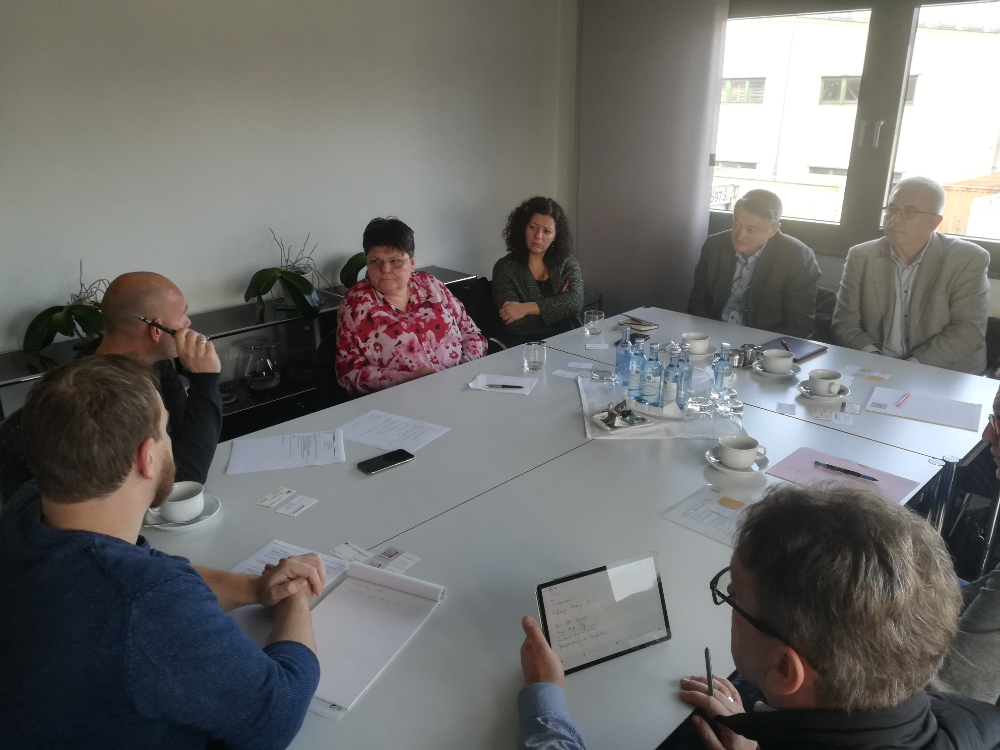
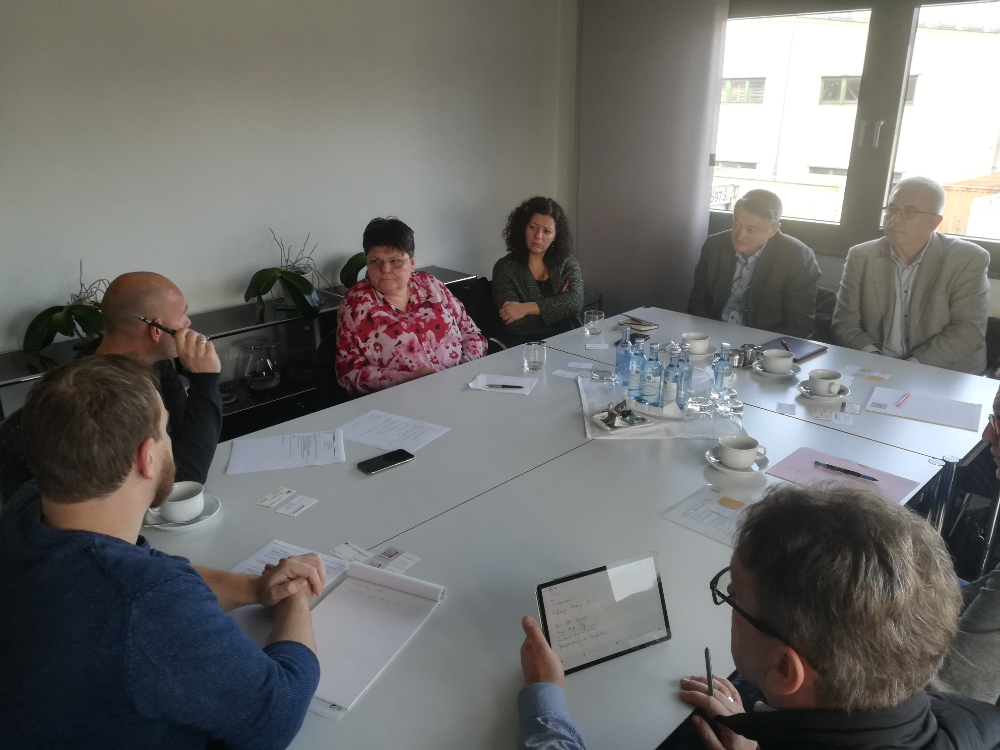

15/12/2019
GODIŠNJA SKUPŠTINA POSLOVNOG UDRUŽENJA "MEĐUNARODNI TRANSPORT"
U petak, 13.12.2019. godine održana je XIX Godišnja Skupština Poslovnog udruženja "Međunarodni Transport" i 16. po redu manifestacija TRUCK BUSSINESS FAIR. Ponovo se na jednom mestu okupio veliki broj učesnika sektora transporta iz zemlje i regiona, njihovi najznačajniji komercijalni partneri, kao i predstavnici javnog sektora. Naš tim je predstavljajući DeveloPPP projekat Richter Transport aktivno učestvovao na ovogodišnjoj tradicionalnoj manifestaciji, koja se pokazala kao relevantan skup za promociju ovakvog projekta koji predviđa kreiranje trening centra u Beogradu, razradu njegovog nastavnog plana i održavanje radionica iz oblasti sistemskog transporta i uticaja noćne vožnje.


10/12/2019
STUDIJSKA POSETA RICHTER TRANSPORTU U VEZELU, NEMAČKA
U prvoj sedmici decembra održana je studijska poseta kompaniji Richter Transport u Vezelu u Nemačkoj.Upoznavanje sa njihovim tehinčkim i poslovnim kapacitetima i razmena iskustava u edukaciji profesionalnih vozača. Poseban deo studijske posete Richter Transportu predstavljala je prezentacija tehnilogije Swap transportnog sistema. Održan je i zvaničan sastanak sa lokalnim udruženjem transportnih preduzeća VVWL na temu DeveloPPP projekta i potencijalne saradnje. Dodatni deo studijeke posete predstavljala je i poseta lokalnim transportnim preduzećima, kao i vozačkoj akademiji Šliske koja aktivno učestvuje u razvoju treninga profesionalnih vozača kamiona i vozila swap transportnih sistema. Na pomenutoj akademiji Šliske održana je i radionica na temu razvoja nastavnog plana u Srbiji, a koja je predvidjena u okviru ovog DeveloPPP projekta.
 



20/10/2019
PREZENTACIJA RICHTER TRANSPORT DEVELOPPP PROJEKTA I DISKUSIJA
U okviru programa DeveloPPP uspostavljenog od strane Nemačkog ministarstva za razvoj i privrednu saradnju - BMZ i Sequa – neprofitne razvojne organizacije iz Nemačke, održana je panel prezentacija i diskusija sa ciljem zvaničnog predstavljanja DeveloPPP projekta osnivanja trening centra za transport robe u drumskom sabraćaju u Srbiji. Nosilac projekta je nemačko transportno preduzeće Richter Transport sa svojim trening centrom u gradu Wesel u pokrajini Severna Rajna Vestfalija. Richter sa svojim nemačkim projektnim konzorcijumom u okviru projekta uspostavlja trening centra za transport robe u drumskom sabraćaju, uz uvođenje rešenja nemačkih standarda sistemskog transporta i povećanje kapaciteta i znanja u sektoru transporta robe u Srbiji kroz poboljšanje i dodatni razvoj vokacionog treninga. Cilj ovog projekta je unapređenje kapaciteta profesionalne nastave u transportu robe u drumskom saobraćaju u Srbiji, uz saradnju predavača iz ove oblasti iz Srbije i Nemačke i razmenu iskustava iz prakse. Projekat traje godinu dana i u predviđa kreiranje novog trening centra u Beogradu, razradu njegovog nastavnog plana, održavanje radionica iz oblasti sistemskog transporta i uticaja noćne vožnje, organizaciju studijskih putovanja, uspostavljanje pilot treninga i uticaj na stručnu nastavu u smislu poboljčanja kvaliteta kroz pozitivne primere iz prakse. Zvanični saradnik projekta u Srbiji je i Poslovno udruženje Međunarodni transport.